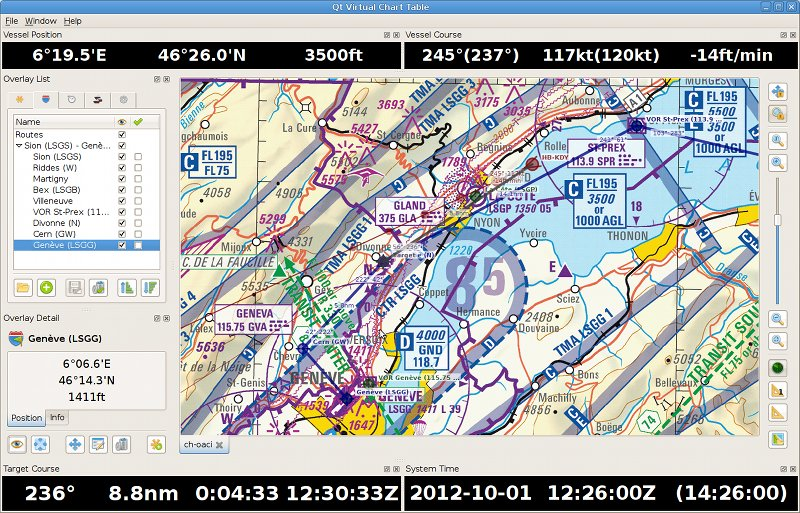

A Qt4 application for conventional chart and GPS navigation
Author: Cédric Dufour <http://cedric.dufour.name>
Website: http://cedric.dufour.name/software/qvct

(Switzerland ICAO chart ©SwissTopo)
The Qt Virtual Chart Table (QVCT) is a Qt4 application which provides a navigation software that simulates the chart table (and instruments corner) usually found in ships.
It is thus suitable for sailing, flying or any other outdoor activity performed using a conventional navigation/planning approach:
It features:
The Qt Virtual Chart Table (QVCT) is free software:
you can redistribute it and/or modify it under the terms of the GNU General
Public License as published by the Free Software Foundation, Version 3.
The Qt Virtual Chart Table (QVCT) is distributed in the hope that it will be useful, but WITHOUT ANY WARRANTY; without even the implied warranty of MERCHANTABILITY or FITNESS FOR A PARTICULAR PURPOSE.
See the GNU General Public License for more details.
The Qt Virtual Chart Table (QVCT) includes all resources which contain the
mention "Qt Virtual Chart Table (QVCT)" in their preamble.
Other resources are (and must be) used according to their original license, which is (should be made) available from their respective author.
The first step is recovering the source code using the GIT versioning system:
mkdir /path/to/source && cd /path/to/source git clone https://github.com/cedric-dufour/qvct
Build environment configuration is then achieved using CMake:
mkdir /path/to/build && cd /path/to/build cmake /path/to/source
Compilation and installation are then achieved using regular Make:
cd /path/to/build make && ls -al ./bin make doc && ls -al ./doc make install
Alternatively (to Make), distribution-specific Debian packages can be built and installed using the ad-hoc commands:
cd /path/to/source debuild -us -uc -b && ls -al ../qvct*.deb dpkg -i ../qvct*.deb
Pre-built binary packages for Ubuntu are available from the author's Launchpad Personal Package Archive (PPA):
https://launchpad.net/~cedric.dufour/+archive/ppa/
Please follow the PPA instructions to carry out the installation.
Please refer to the User Manual and the Frequently Asked Questions.